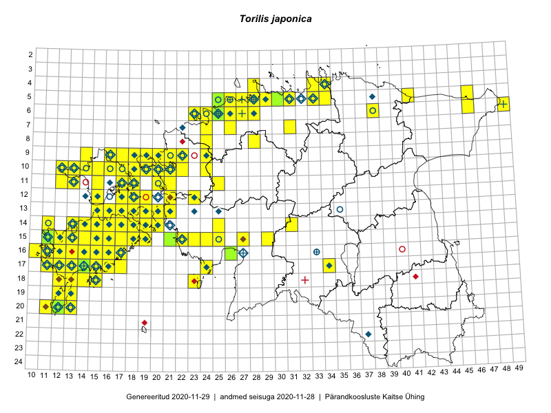

Torilis japonica
Uuendatud: 2016-12-02
Kaardile koondatud taksonid: Torilis japonica (Houtt.) DC.

Kaart põhineb 176 vaatlusel. Taksonit on leitud 105 ruudust.
Kuvatud viited 20 esimesele andmebaasikirjele, ülejäänud PlutoFis
- Toomas Kukk, Eerik Leibak: 2015-08-09: 13-15: ala
- Toomas Kukk, Eerik Leibak: 2015-08-09: 14-15: ala
- Toomas Kukk, Eerik Leibak: 2015-08-08: 15-18: ala
- Toomas Kukk, Peedu Saar: 2015-08-05: 20-11: ala
- Toomas Kukk, Eerik Leibak: 2015-08-12: 10-17: ala
- Toomas Kukk, Eerik Leibak: 2015-08-12: 09-17: ala
- Toomas Kukk, Eerik Leibak: 2015-08-10: 09-14: ala
- Rein Kalamees: 2015-08-09: 05-31: ala
- Peedu Saar, Elle Roosaluste: 2015-07-12: 13-20: ala
- Toomas Kukk, Eerik Leibak: 2015-08-11: 09-16: ala
- Peedu Saar: 2015-08-07: 16-10: ala
- Toomas Kukk: 2014-06-21: 16-10: ala
- Tiit Hallikma, Toomas Kukk: 2015-08-27: 12-21: ala
- Ott Luuk: 2015-07-01: 15-11: GPS punkt
- Peedu Saar, Ott Luuk: 2015-10-14: 16-11: ala
- Meeli Mesipuu, Kadri Tali: 2015-07-08: 13-17: ala
- Meeli Mesipuu, Kadri Tali: 2015-07-08: 14-17: ala
- Meeli Mesipuu: 2015-07-09: 13-16: ala
- Meeli Mesipuu, Timo Luhamäe: 2015-07-24: 05-41: ala
- Oliver Parrest: 2015-07-01: 19-13: ala